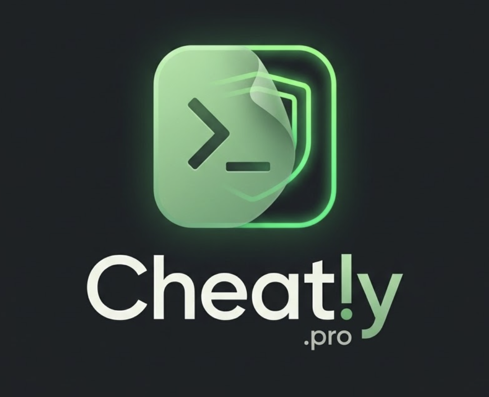

Download the DMG
Open the Cheatly installer link from your email and let the disk image finish downloading.

Cheatly Back to Cheatly →These steps are for the unsigned universal DMG. Cheatly works on macOS 13 or newer and includes Apple Silicon and Intel builds.
Open the Cheatly installer link from your email and let the disk image finish downloading.
Open the DMG, then drag Cheatly.app into your Applications folder.
In Applications, Control-click Cheatly, choose Open, then confirm once more.
Cheatly-*.dmg file from your email.Open Terminal and run this once after copying Cheatly to Applications:
xattr -dr com.apple.quarantine "/Applications/Cheatly.app"
open -a "/Applications/Cheatly.app"This is needed because the current DMG is unsigned. A signed and notarized build will not require this step.
Check that you are on macOS 13 or newer, that the app was copied to Applications, and that your Mac is online. For help, join the Cheatly Discord community →
Use Cheatly only where the interviewer, meeting host, employer, client, school, or platform permits the tools you use. Ask for permission before using LLM tools in a live interview or assessment.